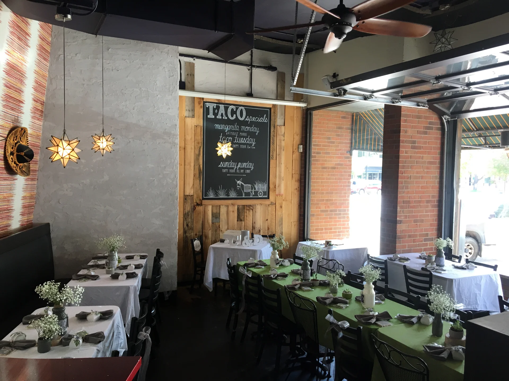
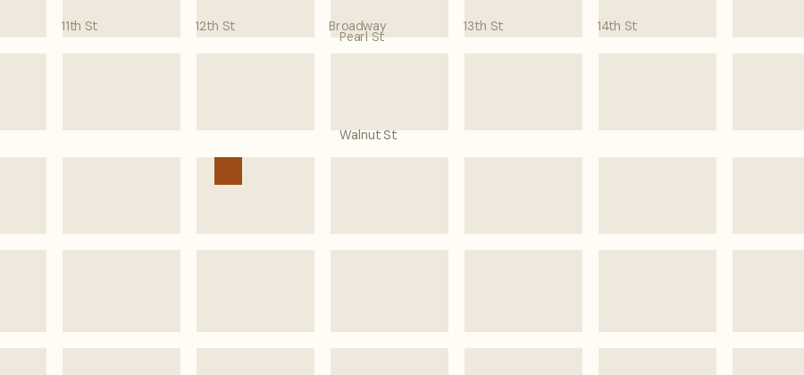

When it’s warm, the door goes up.
The whole front of the room opens onto Walnut Street. Patio tables are first come, first served.
Dogs are welcome on the patio. So are kids, bikes and that one friend who’s always late.
Location & hours
Open now · closes at 9:00 pm
Boulder, Colorado 80302| Monday | 11:00 am – 9:00 pm |
|---|---|
| Tuesday | 11:00 am – 9:00 pm |
| Wednesday | 11:00 am – 9:00 pm |
| Thursday · today | 11:00 am – 9:00 pm |
| Friday | 11:00 am – 10:00 pm |
| Saturday | 11:00 am – 10:00 pm |
| Sunday | 11:00 am – 9:00 pm |
The whole front of the room opens onto Walnut Street. Patio tables are first come, first served.
Dogs are welcome on the patio. So are kids, bikes and that one friend who’s always late.

On foot from Pearl Street, two blocks south on 12th.
Parking at the 11th & Walnut garage, half a block west, or metered on the street until 7 pm.
Bus — HOP and SKIP both stop at Broadway & Walnut.
Lunch is first come, first served; no reservations.
Dinner parties of six or more can call to reserve up to a month ahead. Everyone else, just walk in — the room turns fast.
Want the whole room? That’s a private event.
Step-free entrance from the sidewalk and a level floor throughout.
Restroom is single-stall and accessible.
The room is loud at peak hours; the patio is quieter. Large-print menus on request, and this site works with screen readers.

Between 11th and 12th, on the south side. The brick corner with the chalkboard by the door, and the sails and string lights over the patio.
Open in Google Maps